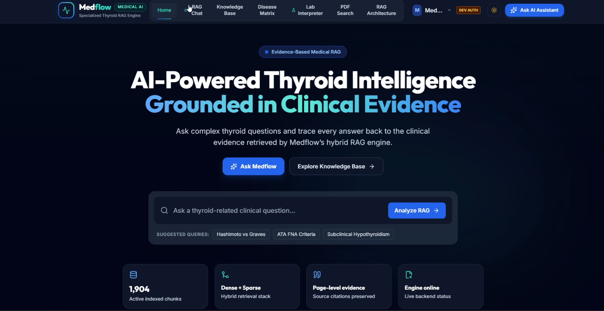

Typical RAG
Retrieve→Generate→Display
Fluent output can still contain unsupported claims, wrong context, fabricated numbers, or unsafe medical advice.
MedFlow is a thyroid-focused clinical RAG system that retrieves evidence first, generates second, then validates claims, citations, numbers, and safety before a response is returned.
Most basic RAG demos stop at retrieve → generate. MedFlow adds a verification layer that changes the LLM from the authority into a controlled component inside an auditable clinical pipeline.
Fluent output can still contain unsupported claims, wrong context, fabricated numbers, or unsafe medical advice.
The final response is the result of a system decision — not just the model's confidence or wording.
The frozen benchmark core is deliberately simple, measurable, and traceable.
Guidelines and educational references are the source of truth. Every downstream step preserves document, page, section, and chunk provenance.
The interface translates the RAG backend into clinical workflows the committee can understand immediately.
Ask thyroid questions and receive source-grounded answers with inspectable evidence.
Structured thyroid condition summaries designed for fast clinical navigation.
Compare thyroid states side by side across biomarkers, symptoms, causes, and management.
Context-aware thyroid lab workflows for functioning, post-thyroidectomy, and congenital states.
Inspect retrieved passages, pages, chunk IDs, and source context instead of trusting a black box.
Expose the system flow visually so judges can understand how retrieval and grounding connect.
Metrics are separated by what they actually measure. Retrieval quality is not medical accuracy; automated faithfulness is not clinician validation.
Strict source + expected passage/page relevance.
At least one relevant chunk within the Top‑4 retrieval window.
Relevant evidence tends to surface early in the ranking.
Real Groq generation with structured citations and abstention cases.
The same held-out set is labelled regression after the first run. The next unbiased validation step is a newly frozen Held-Out V2. This makes the evaluation history honest and defensible.
MedFlow can refuse before an LLM call, downgrade an answer when evidence is partial, or reject generated claims that cannot be supported.
In-domain thyroid questions proceed to retrieval and grounded generation.
The system can provide evidence-grounded information without pretending to diagnose or prescribe for an individual.
Personalized unsupported dosing, prompt injection, emergencies, and clear non-thyroid requests can be intercepted locally.
The validator separates citation ID validity, metadata resolution, claim-to-evidence support, and numeric consistency. Ambiguous claims can be marked REVIEW_REQUIRED instead of being forced into a pass.
Click any frame to inspect a full-size product screen.

The roadmap focuses on better retrieval precision, stronger generalization, and clinician-facing validation — not feature bloat.
Evaluate dense BGE + BM25 + RRF against the frozen baseline using the same ground truth.
Retrieve precise child chunks, then expand parent or neighboring context for generation.
Freeze a brand-new adversarial benchmark before execution to measure safety generalization honestly.
Add approve, edit, flag, and escalate workflows for expert adjudication and governance.
The team behind MedFlow — taking the project from medical-source research and retrieval benchmarking to grounded generation, independent safety evaluation, and the final product experience.
That question — not “can the LLM answer?” — is the foundation of MedFlow.